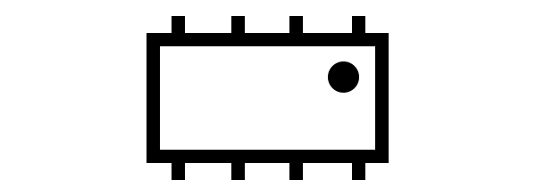

Basic Overdrive Pedal
Now we'll look at how to construct a 'basic' overdrive pedal. There's nothing particularly fancy or special about this pedal, but it will function as a nice overdrive with some good tunability. It might look quite similar to the MXR Distortion+, but with a few changes in component sizes and configurations.
We'll start things nice and simple, looking at an overdrive circuit with one control (gain), and no 'on/off' switch. Clearly this isn't much use - if you decide you dont want overdrive, it's a bit annoying to have to lean down and twist your gain control to minimum... However, this way we can start off simple, then make some mods afterwards to give it some more functionality or a different sound.
Ingredients
For this pedal, you'll need the following:| Jack Socket x2 | |
| Resistor | |
| Capacitor | |
| Operational Amplifier x1 |  |
| \(1M\Omega\) Potentiometer x1 | |
| Diode x2 | |
| \(9V\) Battery x1 |  |
Method
The input stage
We're using a single, \(9V\) battery to power this pedal. This supply is used for the operational amplifier, an active component. The op-amp can therefore output any voltage between \(0V\) and \(9V\). Our input is centred around \(0V\), so in our 'perfect sine wave' simplification of the audio signal, half of our signal is at a voltage below \(0V\). If our op-amp tries to amplify a negative voltage, it won't be able to, since the output can't go below the negative supply (\(0V\)).
It's simple enough to get around this, though! If we 'shift' our input signal so that it's no longer centred around \(0V\), but is instead centred around \(4.5V\), we can take advantage of the full op-amp output range. This 'shift' is known as a DC bias. As we're using a battery, rather than a wall-wart supply for this pedal, we can use a slightly simpler circuit, as batteries aren't as noisy as wall supplies.
CIRCUIT
Looks nice and easy, right? Let's have a quick chat about whats going on here.
R1 and R2 form a voltage divider. Each resistor is the same size (\(1M\Omega\)), and so the voltage drop across each of the two resistors is the same: \({9V \over 2}=4.5V\).
The gain stage
We're using an operational amplifier to amplify our signal. We're going to have our op-amp in a 'non-inverting' configuration, meaning that the output will have the same polarity as the non-iverting (\(+\)) input. This stage is necessary to allow the diodes to properly clip the signal in the overdrive stage. The output from our guitar might typically be less than \(+/-0.5V\), and the diode network will only start clipping when the magnitude exceeds the forward-bias voltage drop of the configuration (usually above \(0.7V\)). By amplifying our signal, we then allow the diodes to actually clip it and create the distorted sound we're looking for.
Simply put, the operational amplifier takes our input signal at its non-inverting (\(+\)) input, and outputs an amplified version of this. To do this, the amplifier must be connected in such a way that it creates a non-inverting amplifier. To achieve this, we connect the output of the amplifier back to the inverting (\(-\)) input of the amplifier via a voltage divider.
The overdrive stage
To actually create the 'distorted' sound, we can use a neat little trick using diodes.
To recap: a diode will conduct current in one direction, and block it in the other. In order to conduct current in the forward-bias direction, the voltage between the two legs of the diodes must exceed what is called the 'forward-bias voltage'. Once this potential difference is achieved, the diode begins to conduct current. Now, once the diode is conducting current, the voltage drop between it's legs remains almost constant for any amount of current flow through the diode. For example, a silicon diode will drop \(\approx0.7V\) for any amount of current flowing through it, and so the anode will be at a voltage that is \(0.7V\) higher than the cathode.
Let's think about a slightly simpler case first. Lets say we have an AC signal connected in series with a resistor and a diode. Before the voltage across the diode reaches \(0.7V\), the diode isn't conducting and so there's no current flow in our circuit. Since there's no current flowing through the series resistance, there's no voltage drop across the resistor (ohms law), and so the measured output voltage is equal to the input voltage).
Once the input voltage exceeds \(0.7V\), the diode begins to conduct current. After this point, any amount of current flow will correspond to a \(0.7V\) drop across the diode. Since the cathode is connected to ground, this actually means that the anode will always be at \(0V+0.7V=0.7V\) whenever the diode is conducting. As the input voltage increases past \(0.7V\) the diode conducts a larger current. Since the resistor is in series with the diode, it also conducts more current, and so the voltage drop across the resistor increases - the voltage drop across the resistor will be \(V_{in}-0.7V\). Hopefully this makes sense - the voltage drop across the diode when conducting is constant, but the voltage drop across the resistor changes so that the total voltage drop in the circuit is equal to the input voltage.
Now back to our overdrive circuit, and this mechanism can be used to 'clip' our signal. Connecting the anode of a diode to our signal and the cathode to ground allows us to clip the positive half of the waveform as we discussed above. Then adding a second diode in parallel with this, but with the cathode on our signal and the anode to ground, allows us to clip the negative half of the waveform. The result is then a truncated waveform, similar to those we saw when discussing how distortion works. In this configuration, the signal is hard-clipped, which might actually sound more like distortion than overdrive (note, however, that the clipping won't be as severe as we saw in the distortion discussion, as real components aren't quite capable of this kind of performance).
The output stage
As we discussed, this version of the circuit is nice and simple, so there isn't much going on at the output just yet.The full assembly
If we put all of this together, we have what is essentially the simplest overdrive pedal that we can make. No switches, one control, and it sounds relatively unremarkable. It still does a decent job though!
Modifications
Volume control will act as tone if coupling cap not high enough (consider f_c)
Tone control
alters sound:
higher output cap value is cutting more treble & volume
log pot maybe better?
different diodes & diode arrangements (asymmetric, series diodes, etc.) different sound. Try difference between hard & soft clip
gain on op-amp alters output